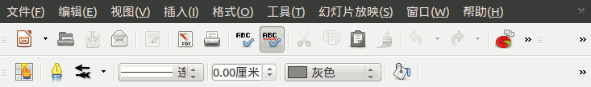
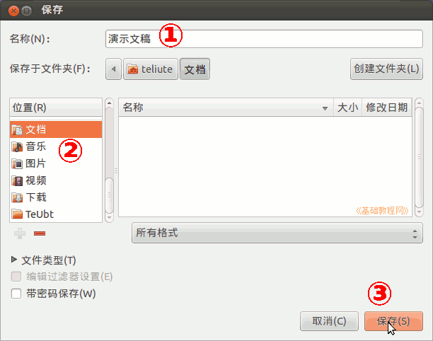

；
；Ubuntu 入门操作指南
作者：TeliuTe 来源：基础教程网
九、LibreOffice Impress 返回目录 下一课LibreOffice 是一套办公软件，Impress 是演示文稿软件；
1、LibreOffice Impress
1）点击左侧栏的黄色稿纸图标，打开 Impress 演示文稿软件；
2）最上面是标题栏，没保存之前显示的是“未命名1”，保存的时候要起个有意义的文件名；
3）下面是菜单栏、工具栏，可以保存文件和设置内容格式，点击右边的折叠双箭头可以打开折叠的菜单按钮；

4）左边是幻灯片目录，列出所有幻灯片缩略图，中间的白色工作区，里面有两个文本框；
右边是常用任务，可以设置幻灯片版式、自定义动画和幻灯片切换
5）在右上角调出汉语输入法，在标题里输入“青草青园”和“美丽的校园”，然后点上面菜单栏“文件－保存”命令，也可以点工具栏上的保存按钮；
6）在出来的保存对话框中，把文件名改成“演示文稿”，在左边位置栏点击“文档”，再点右下角的“保存”，；

7）点保存对话框里的“所有格式”，可以选择保存为其他格式类型；

8）关闭 Writer 然后打开“主文件夹－文档”，可以看到刚才保存的文档，默认是odt 格式；
9）编辑的文件要经常保存，直接点工具栏上的“保存”按钮即可，
第一次保存会出对话框，以后点“保存”会直接保存，按钮变灰色；

本节学习了LibreOffice Impress 的基础知识，如果你成功地完成了练习，请继续学习下一课内容；
本教程由86团学校TeliuTe制作|著作权所有
基础教程网：http://teliute.org/
美丽的校园……
转载和引用本站内容，请保留作者和本站链接。